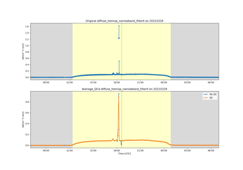
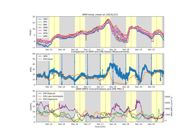
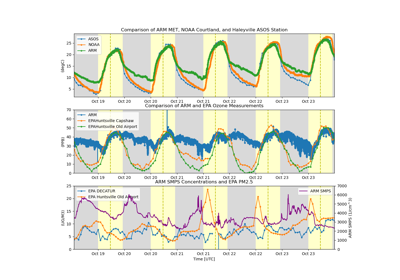

Workflow examples#
Examples showing full workflows, including reading, applying corrections, and visualizations.

Transformations and QC


Plot AERIoe data with cloud base height from ceilometer
Plot AERIoe data with cloud base height from ceilometer



Consolidation of CoURAGE Data Sources
Consolidation of CoURAGE Data Sources

Consolidation of Data Sources